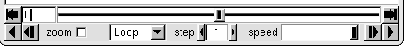

Next: Molecule File Browser Window
Up: Description of each VMD
Previous: Main Window Molecule List
Contents
Index
Subsections
Main Window Animation Controls
Figure 5.2:
The Main window animation controls
|  |
Each molecule in VMD can contain multiple sets of atomic coordinates,
which may be animated to show its motion over time.
The coordinate sets can come from a molecular dynamics simulation,
or simply multiple versions of the same molecular structure.
The Main window contains controls for animated playback of these trajectories.
The controls contains several buttons which act like the
buttons on a VCR or DVD player. The buttons provide a way to play
the trajectory, step forward, stop, go to a specific frame, and go to
the beginning or end.
The status and frame counters shown in the animation control reflects
the state of the top molecule.
Commands entered via this control, however, affect all
active molecules,
not just the top molecule, allowing concurrent animation of multiple molecules.
Animation Speed
The rate of playback can be controlled in two ways. The
Step control changes the animation step size. By default, the frame
step is 1, so each step of the playback increases (or decreases) the
animation frame number by one. If the frame step is 5 then the animation
proceeds five times faster because only a fifth of the frames are shown.
The Speed slider at the bottom of the window also affects the
playback speed. Internally, this controls how many screen updates are
needed between each step. By default, the slider is at the far right
indicating that one step is performed for each screen redraw. Moving the
slider to the left increases the minimum time required between updates.
Jumping to Specific Frames
The start and end buttons are used to simplify the
comparison between the initial and final structures.
The start button resets the current animation to the first frame,
and end jumps to the last frame.
If you need to jump to a specific frame, enter the
frame number in the frame counter text area next to the start button and
press enter.
One thing to bear in mind is that the frame number starts at 0, so to jump
to the 5th frame, you must actually enter 4 here.
The animation controls are all relative to the
top molecule.
Looping Styles
When the animation is playing forward and reaches the end of
the data available for the top molecule, one of three possible actions
takes place, as specified in the style chooser. The default is
`Loop', which will reset the active molecules to the first frame and
continue playing forward. `Once' will stop the animation when it
reaches the last frame, and `Rock' reverses the direction of
animation. The actions are symmetrical when the animation is playing
in reverse.
Next: Molecule File Browser Window
Up: Description of each VMD
Previous: Main Window Molecule List
Contents
Index
vmd@ks.uiuc.edu